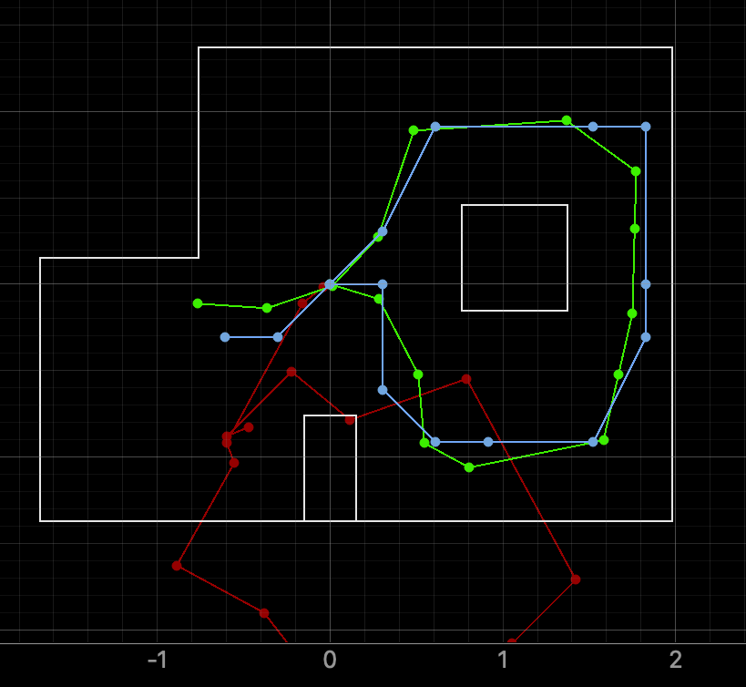
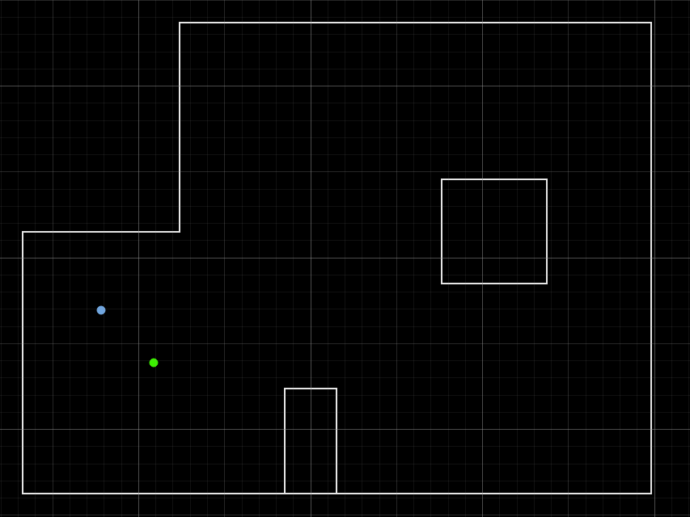
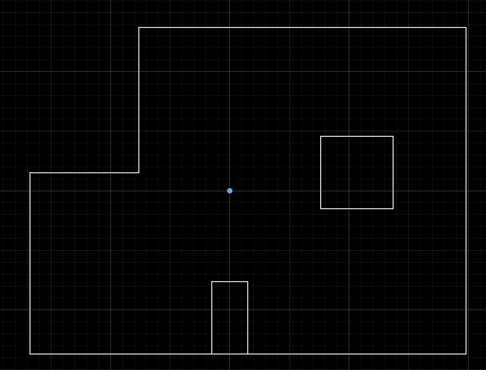
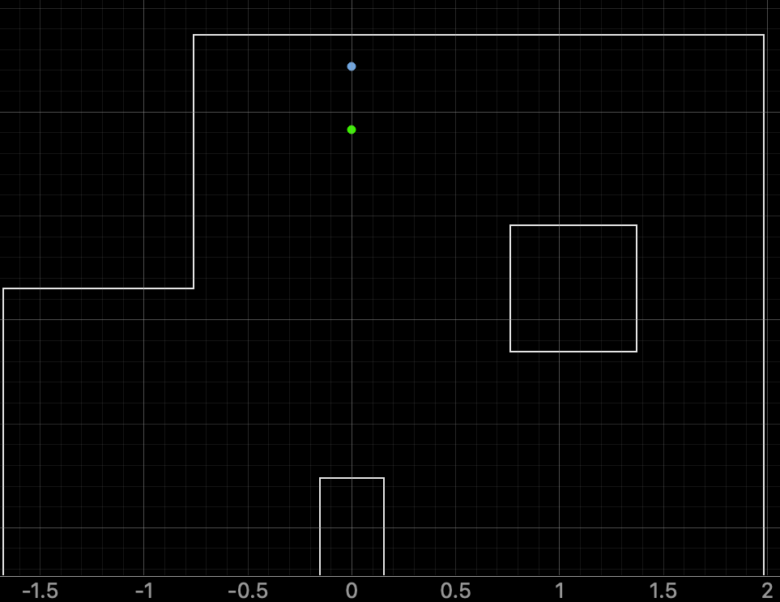
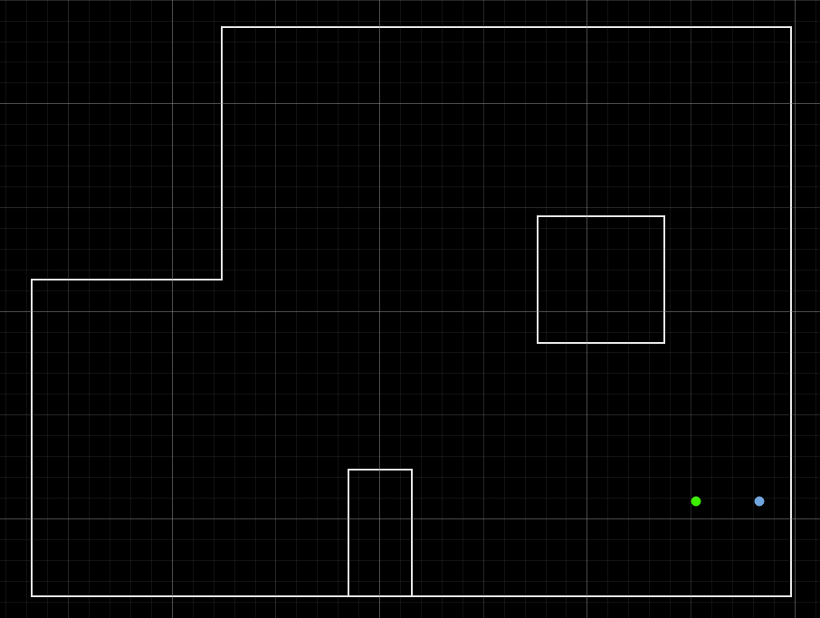
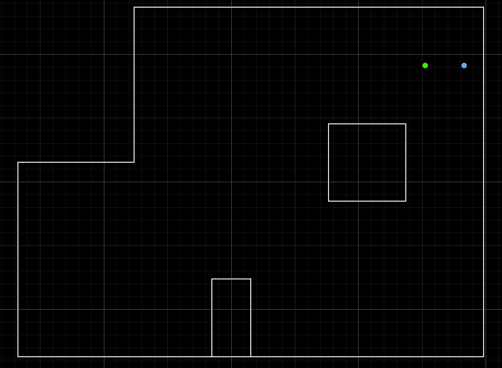

Lab 11: Localization on the Physical Robot
Goal: In this lab, we will perform localization with a Bayes Filter on the actual robot, using 360 degree ToF scans.
Setup Base Code
First, I set up the necessary localization code into my project.
- Lab11_sim.ipynb →
notebooks/directory — Bayes Filter implementation for virtual robot - Lab11_real.ipynb →
notebooks/directory — Skeleton code to integrate localization with real robot - Localization_extras.py →
FastRobots-sim-realease-main/directory — Fully-functional localization in sim module
Task 1: Test Localization in Simulation
For this task, I needed to ensure the simulation notebook ran smoothly. Here is a screenshot showing that the notebook runs. As you can see, the odometry readings in red are way off, but the belief (blue) stays close to the ground truth (green), indicating that the Bayes Filter is running correctly.

Task 2: Running the Update Step with ToF Data
In this task, I will be running only the update step from sensor measurements to localize the robot at different marked positions in the space. The way this will work is that I will place the robot at a marked location, run the function perform_observation_loop(), then using the resulting sensor_ranges and sensor_bearings, determine how well the robot can localize where it is.
The robot will be spinning 360 degrees counterclockwise in 20 degree increments. Therefore, there will be a total of 18 measurements: 0, 20, …, 340. I wanted to make sure my robot could accurately do this, so I tested my orientation PID from previous labs.
I tuned my PID variables and lowered the max turn speed for the robot. Here are the variable values I used:
Kp = 0.18
Ki = 0.0
Kd = 0.02
const int minTurnSpeed = 180;
const int maxTurnSpeed = 200;
Then, I worked on implementing the perform_observation_loop(). This function was simple, I really only needed to incorporate code from my previous labs. This function will call my MAP_SCAN function from Lab 9, then gather data with the SEND_SCAN_DATA command. Here is the completed perform_observation_loop() code.
async def perform_observation_loop(self, rot_vel=120):
Kp = 0.18
Ki = 0.0
Kd = 0.02
self.ble.send_command(CMD.MAP_SCAN, f"{Kp}|{Ki}|{Kd}|0.0|{0}")
await asyncio.sleep(2)
for i in range(1, 18):
self.ble.send_command(CMD.MAP_SCAN, f"{Kp}|{Ki}|{Kd}|-20.0|{i}")
await asyncio.sleep(2.5)
readings = []
def scan_data_handler(uuid, data):
s = self.ble.bytearray_to_string(data)
parts = s.split(",")
if len(parts) == 5:
time_ms, angle, distance, yaw, error = parts
readings.append((float(angle), float(distance)))
self.ble.start_notify(self.ble.uuid['RX_STRING'], scan_data_handler)
self.ble.send_command(CMD.SEND_SCAN_DATA, "")
await asyncio.sleep(3)
self.ble.stop_notify(self.ble.uuid['RX_STRING'])
sensor_ranges = np.array([d / 1000.0 for _, d in readings])[np.newaxis].T
sensor_bearings = np.array([a for a, _ in readings])[np.newaxis].T
return sensor_ranges, sensor_bearingsI also had to make changes to function definitions as described in the lab tips. This involved adding async and await to different function headers so I could wait for BLE commands to complete. After I finished implementing, I was able to run the update steps!
Results
Here is a sample update step video at (5, 3):
Here are the results for each of the spots in the map. Belief is in blue, and ground truth in green!
(-3, 2)

(0, 0)

(0, 3)

(5, -3)

(5, 3)

You can see that for the different points, the calculated belief was pretty close to the ground truth. For the origin, the belief was actually exactly correct! Although the origin was the most accurate belief, I would say that positions closer to the wall and surrounded by close walls will be the best. The reason for this is sensor error, as farther walls will build up error and have a larger effect on the final belief.
I also want to mention that there is also noise from the orientation PID. As you can see in the video above, the robot doesn't exactly rotate by 20 degrees every single time. At the end, the robot has an orientation that is slightly past 0 degrees, when it should've ended at 340 degrees. I spent a lot of time tuning the different variables for Orientation PID, including the K and D values, the time between MAP_SCAN commands, increasing the deadband, and min/max turn speeds. The sensor model also overestimates how close it is to the wall. At points (5,3) and (5,-3), the distance from the wall is almost identical -- the model thinks its closer to the wall than it actually is.
Collaboration
I referenced Lucca's page for a general grasp on the perform observation loop function, but I mostly kept my own logic from previous labs. The lab directions were really clear, so I didn't reference Claude other than styling my website! Most of my time was spent tuning the orientation PID and re-running bad observation loops that messed up.